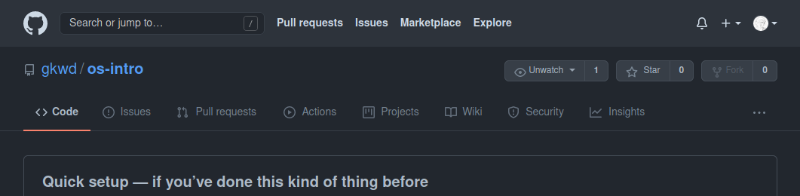
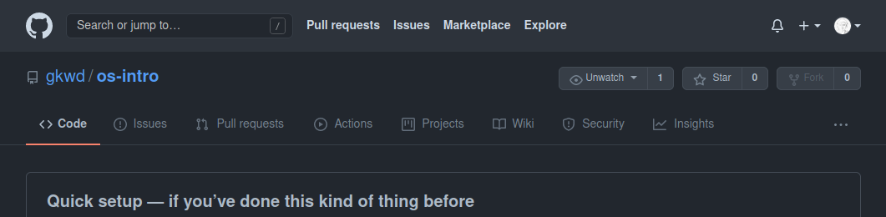

os-intro laboratory, переходим в него  )) и
)) и  )
) )
)  )
) )
)Отчёт по лабораторной работе №2 Ибрагимов Улугбек Ботырхонович
Изучить идеологию и применение средств контроля версий.
cd laboratory
4.3. Инициализируем системы git: git init
4.4. Создаём заготовку для файла README.md:
echo "# Лабораторные работы" >> README.md git add README.md
4.5. Делаем первый коммит и выкладываем на github:
git commit -m "first commit"
git remote add origin
↪ git@github.com:<username>/sciproc-intro.git
git push -u origin masterwget https://creativecommons.org/licenses/by/4.0/legalcode.txt
↪ -O LICENSE
5.2. Добавим шаблон игнорируемых файлов. Просмотрим список имеющихся шаблонов: curl -L -s https://www.gitignore.io/api/list
Затем скачаем шаблон, например, для C: curl -L -s https://www.gitignore.io/api/c >> .gitignore
5.3. Можно это же сделать через web-интерфейс на сайте https://www.gitignore.io/.
5.4. Добавим новые файлы:
git add .
5.5. Выполним коммит:
git commit -a
5.6. Отправим на github:
git pushgit flow init
Префикс для ярлыков установим в v.
6.2. Проверьте, что Вы на ветке develop:
git branch
6.3. Создадим релиз с версией 1.0.0
git flow release start 1.0.0
6.4. Запишем версию:
echo "1.0.0" >> VERSION
6.5. Добавим в индекс:
git add .
git commit -am 'chore(main): add version'
6.6 Зальём релизную ветку в основную ветку
git flow release finish 1.0.0
6.7 Отправим данные на github
git push --all
git push --tags
6.8 Создадим релиз на githubos-intro laboratory, переходим в него )) и )) ))В ходе выполнения Лабораторной работы №2, были приобретены навыки по администрированию и взаимодействию с децентрализованной системой контроля версий и программой git для параллельной разработки и поддержки программного кода.
Ответ: Системы контроля версий (VCS) применяются при работе нескольких человек над одним проектом, совместная работа путем изменения файлов в одном репозитории
Ответ:
- Хранилище - общее пространство для хранения файлов
- Commit - команда для записииндексированных изменений в репозиторий
- История - в истории сохраняются все коммиты, по которым можно отследить автора, сообщение, дату и хэш коммита
- Рабочая копия - все файлы кроме
.git/называются рабочей копией, и принадлежать пользователю (-лям)
Ответ: Централизованные системы контроля версий - сохраняют проект и его файлы на один общий сервер, децентрализованные системы контроля версий - при каждом копировании данных удаленного репозитория, происходит полное копирование данных в локальный репозиторий. Пример ЦСКВ - SVN, MS TFS, ClearCase; ДСКВ - Git, Mercurial, Bazaar.
Ответ:
- Создаем репозиторий, именуем его
- Добавляем файлы в репозиторий
- Фиксируем с помощью коммитов
- Изменяем файлы репозитория и фиксируем изменения
Ответ:
- Создаем репозиторий, именуем его или присоединяемся к нему в качестве
contibutor- Добавляем файлы в репозиторий
- Фиксируем с помощью коммитов
- Изменяем файлы репозитория и фиксируем изменения
- Ждем проверки коммитов при участии других пользователей в общем репозитории
Ответ: Систематизация, параллельность разработки программного обеспечения, единое место для хранение файлов проекта
Ответ: Создание репозитория (
git init), Клонирование репозитория (git clone), Добавление изменений в индекс (git add), Удаление изменений из индекса (git reset), Коммиты (git commit), Удаление файла (git rm).
Ответ: Для написания черновых работ по лабораторным работам я использую локальные репозитории, для их распространения или для оценивания преподователем я использую удаленный репозиторий
git
Ответ: Ветви служат для паралельной разработки программного обеспечения, тестирования, отладки и улучшения
Ответ: Игнорирование можно установить для проекта, компьютера и репозитория, цель игнорирования заключается в том, чтобы неотслеживать файлы служебного типа, например временные файлы сборных утилит для проектов или только те файлы которые полезны при взаимодействии только с очень ограниченным программным обеспечением